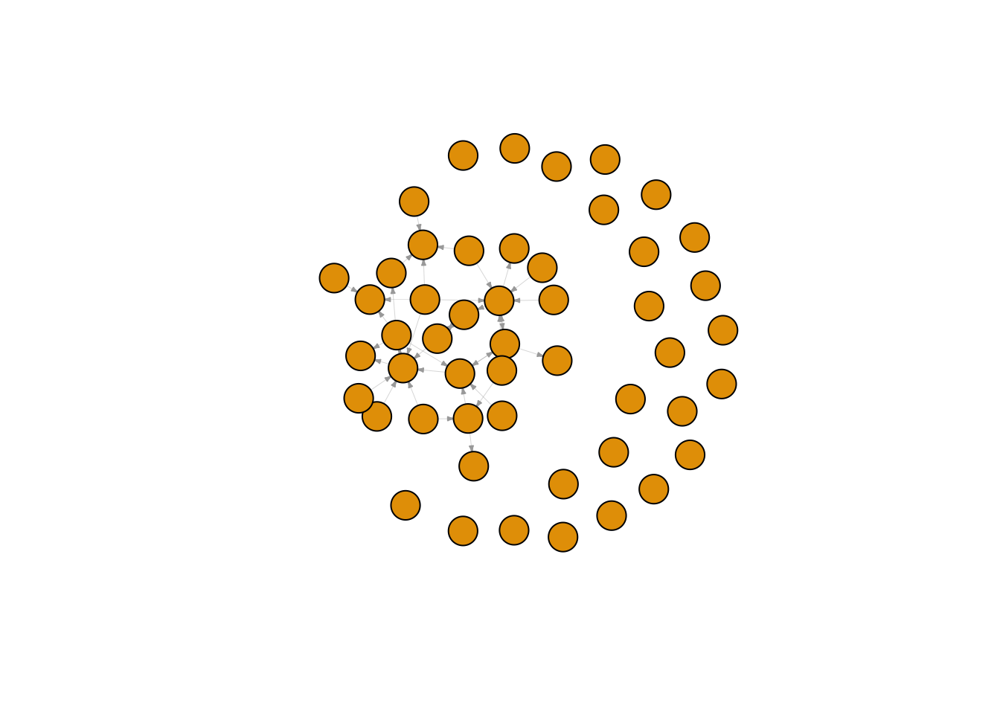
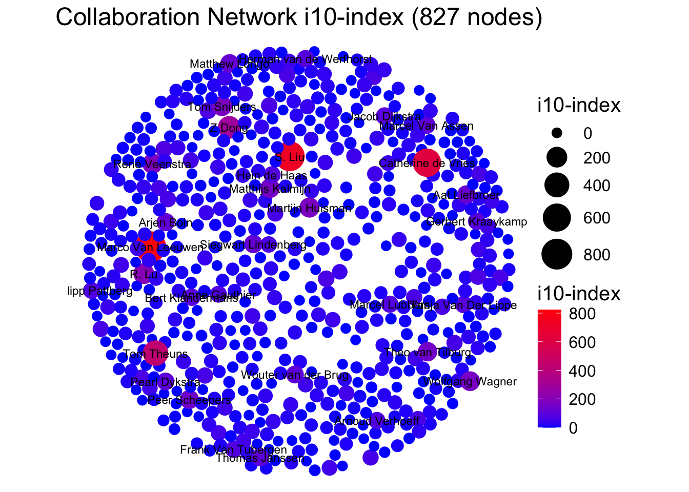

Fuctions
fpackage.check <- function(packages) {
lapply(packages, FUN = function(x) {
if (!require(x, character.only = TRUE)) {
install.packages(x, dependencies = TRUE)
library(x, character.only = TRUE)
}
})
}
fsave <- function(x, file = NULL, location = "./data/processed/") {
ifelse(!dir.exists("data"), dir.create("data"), FALSE)
ifelse(!dir.exists("data/processed"), dir.create("data/processed"), FALSE)
if (is.null(file))
file = deparse(substitute(x))
datename <- substr(gsub("[:-]", "", Sys.time()), 1, 8)
totalname <- paste(location, file, "_", datename, ".rda", sep = "")
save(x, file = totalname) #need to fix if file is reloaded as input name, not as x.
}
fload <- function(filename) {
load(filename)
get(ls()[ls() != "filename"])
}
fshowdf <- function(x, ...) {
knitr::kable(x, digits = 2, "html", ...) %>%
kableExtra::kable_styling(bootstrap_options = c("striped", "hover")) %>%
kableExtra::scroll_box(width = "100%", height = "300px")
}
packages <- c("tidyverse", "scholar", "openalexR", "rvest", "jsonlite")
fpackage.check(packages)
#> [[1]]
#> NULL
#>
#> [[2]]
#> NULL
#>
#> [[3]]
#> NULL
#>
#> [[4]]
#> NULL
#>
#> [[5]]
#> NULL
# make yourself known to openAlex
options(openalexR.mailto = "lucan.bovens@home.nl")
df_works <- fload("./data/processed/works_20241001.rda")
scholars <- fload("./data/processed/scholars_20241001.rda")
# (sociology, RU)
demographics <- do.call(rbind.data.frame, scholars$demographics)
demographics <- demographics %>%
mutate(Universiteit1.22 = replace(Universiteit1.22, is.na(Universiteit1.22), ""), Universiteit2.22 = replace(Universiteit2.22,
is.na(Universiteit2.22), ""), Universiteit1.24 = replace(Universiteit1.24, is.na(Universiteit1.24),
""), Universiteit2.24 = replace(Universiteit2.24, is.na(Universiteit2.24), ""), discipline.22 = replace(discipline.22,
is.na(discipline.22), ""), discipline.24 = replace(discipline.24, is.na(discipline.24), ""))
sample <- which((demographics$Universiteit1.22 == "RU" | demographics$Universiteit2.22 == "RU" | demographics$Universiteit1.24 ==
"RU" | demographics$Universiteit2.24 == "RU") & (demographics$discipline.22 == "sociology" | demographics$discipline.24 ==
"sociology"))
demographics_soc <- demographics[sample, ]
scholars_sel <- lapply(scholars, "[", sample)
ids <- demographics_soc$au_id
wave2 <- wave1 <- matrix(0, nrow = length(ids), ncol = length(ids), dimnames = list(ids, ids))
works <- scholars_sel$work
works_id <- unlist(lapply(works, function(l) l$id))
works_author <- unlist(lapply(works, function(l) l$author), recursive = FALSE)
works_year <- unlist(lapply(works, function(l) l$publication_year), recursive = FALSE)
df_works <- tibble(works_id, works_author, works_year)
dups <- which(duplicated(works_id))
# why are there some many papers of Batenburg duplicates
df_works <- df_works[-dups, ]
df_works_w2 <- df_works[df_works$works_year > 2019, ]
# undirected
for (i in 1:nrow(df_works_w2)) {
egos <- df_works_w2$works_author[i][[1]]$au_id
if (sum(ids %in% egos) > 0) {
wave2[which(ids %in% egos), which(ids %in% egos)] <- 1
}
}
fcolnet <- function(data = scholars, university = "RU", discipline = "sociology", waves = list(c(2015,
2018), c(2019, 2023)), type = c("first")) {
# step 1
demographics <- do.call(rbind.data.frame, data$demographics)
demographics <- demographics %>%
mutate(Universiteit1.22 = replace(Universiteit1.22, is.na(Universiteit1.22), ""), Universiteit2.22 = replace(Universiteit2.22,
is.na(Universiteit2.22), ""), Universiteit1.24 = replace(Universiteit1.24, is.na(Universiteit1.24),
""), Universiteit2.24 = replace(Universiteit2.24, is.na(Universiteit2.24), ""), discipline.22 = replace(discipline.22,
is.na(discipline.22), ""), discipline.24 = replace(discipline.24, is.na(discipline.24), ""))
sample <- which((demographics$Universiteit1.22 %in% university | demographics$Universiteit2.22 %in%
university | demographics$Universiteit1.24 %in% university | demographics$Universiteit2.24 %in%
university) & (demographics$discipline.22 %in% discipline | demographics$discipline.24 %in% discipline))
demographics_soc <- demographics[sample, ]
scholars_sel <- lapply(scholars, "[", sample)
# step 2
ids <- demographics_soc$au_id
nwaves <- length(waves)
nets <- array(0, dim = c(nwaves, length(ids), length(ids)), dimnames = list(wave = 1:nwaves, ids,
ids))
dimnames(nets)
# step 3
df_works <- tibble(works_id = unlist(lapply(scholars_sel$work, function(l) l$id)), works_author = unlist(lapply(scholars_sel$work,
function(l) l$author), recursive = FALSE), works_year = unlist(lapply(scholars_sel$work, function(l) l$publication_year),
recursive = FALSE))
df_works <- df_works[!duplicated(df_works), ]
# step 4
if (type == "first") {
for (j in 1:nwaves) {
df_works_w <- df_works[df_works$works_year >= waves[[j]][1] & df_works$works_year <= waves[[j]][2],
]
for (i in 1:nrow(df_works_w)) {
ego <- df_works_w$works_author[i][[1]]$au_id[1]
alters <- df_works_w$works_author[i][[1]]$au_id[-1]
if (sum(ids %in% ego) > 0 & sum(ids %in% alters) > 0) {
nets[j, which(ids %in% ego), which(ids %in% alters)] <- 1
}
}
}
}
if (type == "last") {
for (j in 1:nwaves) {
df_works_w <- df_works[df_works$works_year >= waves[[j]][1] & df_works$works_year <= waves[[j]][2],
]
for (i in 1:nrow(df_works_w)) {
ego <- rev(df_works_w$works_author[i][[1]]$au_id)[1]
alters <- rev(df_works_w$works_author[i][[1]]$au_id)[-1]
if (sum(ids %in% ego) > 0 & sum(ids %in% alters) > 0) {
nets[j, which(ids %in% ego), which(ids %in% alters)] <- 1
}
}
}
}
if (type == "all") {
for (j in 1:nwaves) {
df_works_w <- df_works[df_works$works_year >= waves[[j]][1] & df_works$works_year <= waves[[j]][2],
]
for (i in 1:nrow(df_works_w)) {
egos <- df_works_w$works_author[i][[1]]$au_id
if (sum(ids %in% egos) > 0) {
nets[j, which(ids %in% egos), which(ids %in% egos)] <- 1
}
}
}
}
output <- list()
output$data <- scholars_sel
output$nets <- nets
return(output)
}
#save the output of your function
test <- fcolnet(data = scholars,
university = "RU",
discipline = "sociology",
waves = list(c(2015, 2018), c(2019, 2023)),
type = c("first"))
test_w1 <- igraph::graph_from_adjacency_matrix(
test$nets[1,,], #for this example I take the first wave of data. (thus I select the array of networks and take the first matrix)
mode = c("directed"),
weighted = NULL,
diag = FALSE,
add.colnames = NULL,
add.rownames = NULL
)
plot(test_w1,
vertex.label = NA,
edge.width = 0.2,
edge.arrow.size =0.2)

test <- fcolnet(data = scholars,
university = c("RU", "UvT"),
discipline = c("sociology", "political science"),
waves = list(c(2015, 2018), c(2019, 2023)),
type = c("all"))
test_w2 <- igraph::graph_from_adjacency_matrix(
test$nets[2,,], #now, I take the second wave
mode = c("directed"),
weighted = NULL,
diag = FALSE,
add.colnames = NULL
)
#Let us find ego characteristics.
#first fish out the data
df <- test$data
#same complicated structure as 'scholars' thus first make a dataframe from the list in which all info was saved.
df_ego <- do.call(rbind.data.frame, df$demographics)
#DO NOT MESS UP THE ORDER! THUS IF YOU JOIN THIS DATA WITH YOUR OWN DATA CHECK THAT ORDER REMAINED THE SAME!!
plot(test_w2,
vertex.color = ifelse(df_ego$discipline.24 == "sociology", "red", "blue"), #now, I can use actor attributes for plotting.
vertex.label = NA,
edge.width = 0.2,
edge.arrow.size =0.2)
# Load datasets with h-index and i10-index added to them (Small note: the indeces give the same
# values for both years. I have not yet found a way to find the index values for two years prior)
df22_index <- fload("./data/processed/df22_with_indices_20241001.rda")
df24_index <- fload("./data/processed/df24_with_indices_20241001.rda")
View(df22_index)
View(df24_index)
library(igraph)
library(ggraph)
library(dplyr)
# Adjacency matrix for all 827 scholars
num_scholars <- 827
full_adj_matrix <- matrix(0, nrow = num_scholars, ncol = num_scholars)
# Create graph from adjacency matrix
graphindex_full <- graph_from_adjacency_matrix(full_adj_matrix, mode = "undirected", diag = FALSE)
# Assign scholar names and H-index to the vertices
V(graphindex_full)$name <- df22_index$Naam
V(graphindex_full)$h_index <- df22_index$h_index
V(graphindex_full)$i10_index <- df22_index$i10_index
# Visualize the network graph. H-index is seen as continuous so it's possible to go for gradient color scale
ggraph(graphindex_full, layout = "fr") +
geom_edge_link(color = "grey", width = 0.5) + # Thickness of edges
geom_node_point(aes(size = h_index, color = h_index)) + # Nodes sized and colored by continuous H-index
scale_size(range = c(3, 10)) + # Node scale size
scale_color_gradient(low = "blue", high = "red") + # Continuous color gradient for the H-index I use
theme_void() + # Make background white (I refuse to use dark mode)
labs(title = "Collaboration Network H-index (827 nodes)",
color = "H-index",
size = "H-index") +
theme(
plot.title = element_text(size = 18, hjust = 0.5), # Title
legend.title = element_text(size = 15), # Legend title
legend.text = element_text(size = 12) # Legend text
) +
theme(aspect.ratio = 1) # Consistent aspect ratio
# Increasing plot size
options(repr.plot.width = 15, repr.plot.height = 10)
# Visualize the network graph
ggraph(graphindex_full, layout = "fr") +
geom_edge_link(color = "grey", width = 0.5) + # Thickness of edges
geom_node_point(aes(size = h_index, color = h_index)) + # Nodes sized and colored by continuous H-index
scale_size(range = c(2, 7)) + # Node scale size
scale_color_gradient(low = "blue", high = "red") + # Continuous color gradient for the H-index I use
theme_void() + # Make background white (I refuse to use dark mode)
labs(title = "Collaboration Network H-index (827 nodes)",
color = "H-index",
size = "H-index") +
theme(
plot.title = element_text(size = 18, hjust = 0.5), # Title
legend.title = element_text(size = 15), # Legend title
legend.text = element_text(size = 12) # Legend text
) +
theme(aspect.ratio = 1) # Consistent aspect ratio
# Increasing plot size
options(repr.plot.width = 15, repr.plot.height = 10)
#Detach sna package to avoid conflicts
if ("package:sna" %in% search()) {
detach("package:sna", unload = TRUE)
}
full_adj_matrix[1:nrow(wave2), 1:ncol(wave2)] <- wave2
graphindex_full <- graph_from_adjacency_matrix(full_adj_matrix, mode = "undirected", diag = FALSE)
V(graphindex_full)$name <- df22_index$Naam
V(graphindex_full)$h_index <- df22_index$h_index
# Remove isolate
isolates <- V(graphindex_full)[degree(graphindex_full) == 0]
# Remove isolates from graph
graphindex_full_no_isolates <- delete_vertices(graphindex_full, isolates)
options(repr.plot.width = 20, repr.plot.height = 20)
ggraph(graphindex_full_no_isolates, layout = "fr") +
geom_edge_link(color = "grey", width = 0.5) +
geom_node_point(aes(size = h_index, color = h_index)) +
scale_size(range = c(2, 10)) +
scale_color_gradient(low = "blue", high = "red") + # Color gradient for H-index
theme_void() + # Remove background
labs(title = "Collaboration Network (Without Isolates)",
color = "H-index",
size = "H-index") +
theme(
plot.title = element_text(size = 18, hjust = 0.5),
legend.title = element_text(size = 12),
legend.text = element_text(size = 10)
) +
theme(aspect.ratio = 1)
View(df22_index)
library(igraph)
library(ggraph)
library(dplyr)
# Adjacency matrix for all 827 scholars
num_scholars <- 827
full_adj_matrix <- matrix(0, nrow = num_scholars, ncol = num_scholars)
# Create graph from adjacency matrix
graphindex_full <- graph_from_adjacency_matrix(full_adj_matrix, mode = "undirected", diag = FALSE)
# Assign scholar names and H-index to the vertices
V(graphindex_full)$name <- df22_index$Naam
V(graphindex_full)$h_index <- df22_index$h_index
V(graphindex_full)$i10_index <- df22_index$i10_index
# Calculate the threshold for the top 5% based on the i10-index
i10_threshold <- quantile(V(graphindex_full)$i10_index, 0.95, na.rm = TRUE)
# Visualize the network graph. H-index is seen as continuous so it's possible to go for gradient color scale
ggraph(graphindex_full, layout = "fr") +
geom_edge_link(color = "grey", width = 0.5) + # Thickness of edges
geom_node_point(aes(size = i10_index, color = i10_index)) + # Nodes sized and colored by continuous H-index
geom_node_text(aes(label = ifelse(i10_index >= i10_threshold, name, "")), # Only label nodes in top 5%
repel = FALSE, size = 3) + # Repel labels to avoid overlap
scale_size(range = c(3, 10)) + # Node scale size
scale_color_gradient(low = "blue", high = "red") + # Continuous color gradient for the i10-index I use
theme_void() + # Make background white (I refuse to use dark mode)
labs(title = "Collaboration Network i10-index (827 nodes)",
color = "i10-index",
size = "i10-index") +
theme(
plot.title = element_text(size = 18, hjust = 0.5), # Title
legend.title = element_text(size = 15), # Legend title
legend.text = element_text(size = 12) # Legend text
) +
theme(aspect.ratio = 1) # Consistent aspect ratio

# Increasing plot size
options(repr.plot.width = 15, repr.plot.height = 10)
#Detach sna package to avoid conflicts
if ("package:sna" %in% search()) {
detach("package:sna", unload = TRUE)
}
full_adj_matrix[1:nrow(wave2), 1:ncol(wave2)] <- wave2
graphindex_full <- graph_from_adjacency_matrix(full_adj_matrix, mode = "undirected", diag = FALSE)
V(graphindex_full)$name <- df22_index$Naam
V(graphindex_full)$h_index <- df22_index$h_index
V(graphindex_full)$i10_index <- df22_index$i10_index
# Isolates removal
isolates <- V(graphindex_full)[degree(graphindex_full) == 0]
# Same from graph
graphindex_full_no_isolates <- delete_vertices(graphindex_full, isolates)
options(repr.plot.width = 20, repr.plot.height = 20) # Adjust if needed
# Fix the issue with the title and edge display
ggraph(graphindex_full_no_isolates, layout = "fr") +
geom_edge_link(color = "grey", width = 0.5) + #
geom_node_point(aes(size = i10_index, color = i10_index)) + #
scale_size(range = c(2, 10)) + #
scale_color_gradient(low = "blue", high = "red") + #
theme_void() + #
labs(title = "Collaboration Network Based on i10-index (Without Isolates)",
color = "i10-index",
size = "i10-index") +
theme(
plot.title = element_text(size = 18, hjust = 0.5),
legend.title = element_text(size = 12),
legend.text = element_text(size = 10)
) +
theme(aspect.ratio = 1) # Keep aspect ratio consistent
